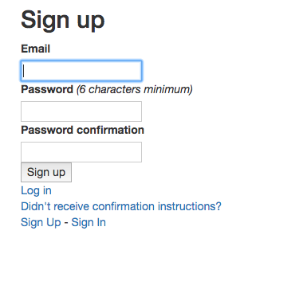
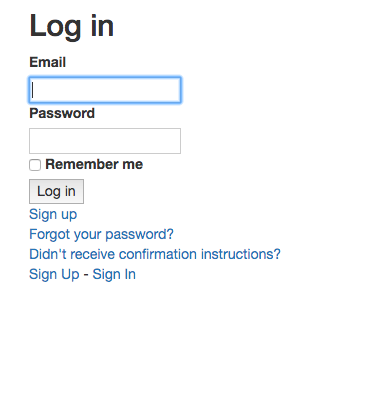
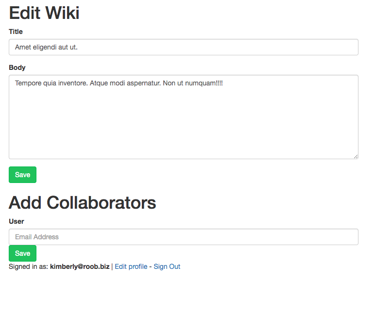
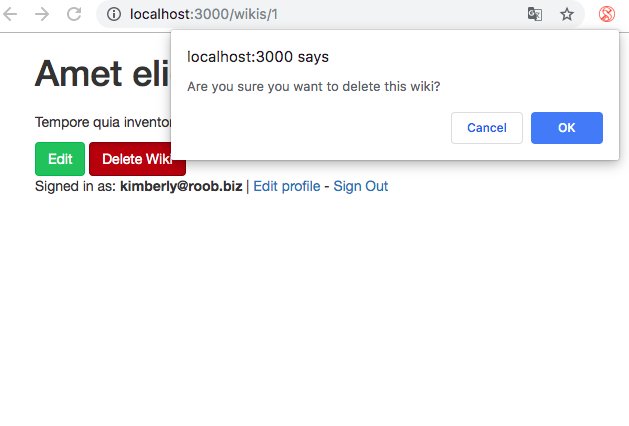
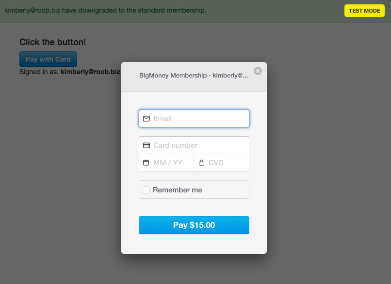
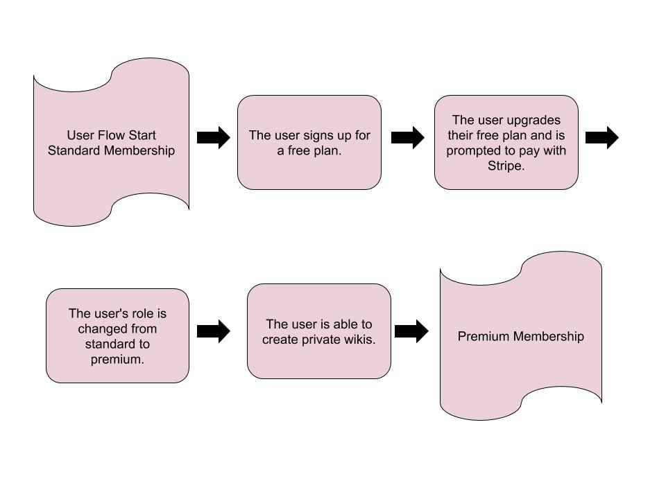

Ruby on Rails is a Model-View-Controller framework.
This allows us to build our application with user stories in mind.
We want to accomplish the following user stories:
APP DEVELOPMENT
Blocipedia is a web application that allows users to share information.
It is similar to Wikipedia, which is an online encyclopedia,
created by volunteers around the world.
My goal for this project was to learn how to create a
basic Ruby on Rails application and to utilize different Ruby gems.
Ruby on Rails is a Model-View-Controller framework.
This allows us to build our application with user stories in mind.
We want to accomplish the following user stories:
We want our users to be able to sign up for an account using their email address. In other words, we want to authenticate our users
 Although we can go through our CRUD actions to implement authentication, the easiest way to accomplish this is to utilize our Devise gem. This gem also takes care of our sign in/sign out functions for our users. Now that we have our users authenticated, we want to authorize our users to be able to create, read, update, and delete public wikis.
 We want to create different roles for our users to authorize certain functions for certain roles. We want to offer three roles: admin, standard, and premium.
We have another amazing gem to use to help with our authorization process, called Pundit.
After we implement authorization, we want to use seed data to test out our application. We have another great gem, called Faker, that creates fake data for us automatically. Up to this point of the application, we have our foundation: we have our users and their ability to create wikis. We want to take it even further. We have two other user roles that we can implement. Our premium role for users should provide users with special privileges. We want to upgrade our users to a paid plan to access the premium features. Going from the standard free plan to a premium paid plan is a bit complicated. So we can create a user flow to help things along. An example of a user flow for this app:
We use Stripe to charge users to change their role from standard to premium. If we have the ability to upgrade a user's role to premium, we should also be able to downgrade a user back to the standard role. One privilege for premium users is the ability to create private wikis. We implement a form in the wikis views, which will only be shown to admin and premium users, through the help of Pundit. We want our premium users to be able to add and remove collaborators to their privated wikis. In order to accomplish this user story, we developed the create and destroy functions for wiki collaborators in the Collaborators Controller. The create function is connected to the new wiki view. In the new wiki view, the premium user would have an option to add collaborators using the create function. We also updated the wiki policy so that we can allow only certain users the ability to create and destroy collaborators.